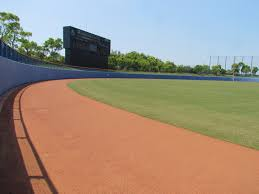

戸井愛翔
2001 9/19
小竹
思い立ったが吉日
井の中の蛙大海を知らず。されど、空の藍（蒼）を知る
こんにちは僕の名前は戸井愛翔です。誕生日や出身地等は上に書いてありますので参照をお願いしますね。せっかく自分のWEｂサイトを作る機会をいただきましたので、自分の趣味や最近の出来事おすすめの本をまとめさせていただきました。
 ここでは少し中学時代にしていた、部活の話をしたいなと思います.野球する前は、柔道をやっておりスポーツ自体も少しうんざりしていたので、部活自体する気が起きていませんでした。でも、まあ友達に誘われたので何んとなーく始めることになりました。
まぁ、当然初心者ですから試合に出る機会もなくボールボーイや荷物持ちといった後輩といえばこれみたいなことをさせられていました。試合に出ていないのにスパイクで手のひら切ったりなど一年生の頃は散々でしたね。3年が引退すると人数が少なかったものでしたので、試合に出るようになりました。まだ、試合に慣れていなかったので打ちもしないわ、エラーを起こすわなどで散々な成績であったと思います。
二年生になると、体つきも変わり試合になれだしたのである程度打て、守れるようになりました。先輩が引退すると副キャプテンを任されて、いろいろと大変でした。そんな中、打率も安定し4番を任されるようになったのはとても嬉しかったですね。打率は一番高く打つことに関しては、だれにも負けない気がしていたと思います
三年生になるとみんな最後の試合に向けて気合が入りピリピリはしていませんでしたが、一番熱が入っていたころだと思います。そんな中ですよ、僕やらかしてしまうんですよ。はい、けがですね。目にボールが当たりもう少しで失明するところまで来ました。当然、入院です。「あのー。夏前最後の試合が明日あるんですが、出れますか？」僕はこう聞いたわけですよ。「何言ってんですか、まず入院ですよ。試合なんてしたら目が治らなくなるわ」と。絶望ですよ、絶望。ショックの余りご飯が食べれなくなってめっちゃ痩せましたね。しかもその大会、初戦突破ですよ。もーメンタルがいかれましたね。チームメンバーが見舞いに来てくれていたのが、まぁ唯一の救いだったと思います。復帰後（退院後ですね）めっちゃくちゃ練習したわけです。幸いなことに、入院期間が短くて感覚を取り戻すのが速かったわけです。そのかいあってか、練習試合、二塁打、三塁打とか打ちまくるわけですよ（ホームランはなっかたけど）準備は、万全とまではいかずとも、過去最高の状態にはなっていましたね。
そして最後の試合ですよ。本戦は負け、敗者復活戦の六回人生最大級の恥をかきました。こちら側が攻撃でありまして、点数は取れず負けている状態でした。監督の所に集合し僕が一言添えてしまったんです…「俺に回せ。絶対、打つから」と。内心ですよ？内心「とは言ったものの、回ってこないだろ」はい、もうわかりましたね。回ってきましたよ。まあそこでバチっと打てればよかったんですがね～。ライトゴロでアウトチェンジですよ。そのまま点数を取れず負けましたね。そして夏が終わりましたね。
ざっとこんな感じでしょうか。まぁまだ話せていない話はあり、今思えば人生一濃厚な時間を過ごしたかもしれませんね。高校？面白くないですよ。なんもしてませんし、勉強しか思い出がありませんね。。。。さてここらで終わろうと思います。左にあります、「最近の出来事」「趣味」「おすすめの本」をクリックしてもらえば見たい所行けますよ。ぜひ見て行ってっください。